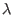
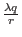

Next: Mathematics Used in this
Up: Quantum Computing, Shor's Algorithm,
Previous: Glossary
Contents
This is a glossary of terms and variables used throughout this paper.
- 
- :
In the context of Shor's algorithm in integer such that
m = .
- a
- :
A variable that when used in the context of Shor's algorithm
is an argument to the function
 (a) = xa mod n. It may
be a single integer, or it may denote a superposition of states.
(a) = xa mod n. It may
be a single integer, or it may denote a superposition of states.
- Classical computer
- :
A computer whose internal workings behave in manner consistent
with classical physics. Data registers in a classical
computer can not exist in a superposition of states. By
definition (e.g. the Church-Turing Thesis) a classical
computer can only compute functions that a Turing machine can
compute.
- Classical physics
- :
The model that was used to describe physical phenomenon before
the advent of quantum physics. The predictions of classical physics
with regard to the behavior of fundamental particles are incorrect.
- Collapse
- :
A collapse in the context of this paper is what happens to the
state vector of a quantum mechanical system when that system is
observed or measured. Since the system can only be measured to be in
one of its base states, the state vector will collapse from some
superposition of base states into the measured state only.
- Complex vector space
- :
A vector space in which the coordinates of a vector are
complex numbers.
- Complexity class
- :
A grouping of algorithms based on how their memory usage and
number of operations scale with the size of the input.
- Coprime
- :
Integers a and b are coprime if their greatest common
denominator is one.
- Discrete Fourier Transform
- :
A transformation converts a finite list of equally spaced
samples of a function into a list of coefficients of finite
combinations of circles, ordered by their frequencies, that
have the same values. In Shor's algorithm it is used to
calculate and multiple of the inverse period, where the
period is the quantity which enables Shor's algorithm to find
factors of a number n.
- gcd
- :
This is an abbreviation for the mathematical function which
calculates the greatest common denominator of two integers. The
greatest common denominator of two integers a and b is the largest
integer c such that a/c and b/c are integers.
- Hilbert Space
- :
A complex linear vector space. The complete state of a n
state quantum mechanical system can be represented by a vector in an n
dimensional Hilbert Space.
- Linear vector space
- :
A vector space such that vectors within the space which are added or multiplied together result in vectors that also lie within the same space.
- Memory register
- :
A array of bits on a classical computer. A memory register of
size n may store one of 2n values.
- n
- :
In the context of Shor's algorithm, a number to be factored.
- Periodic function
- :
A function with a period r such that
(x) = (x + r) = (x + 2r) and so on. Sine and Cosine are typical examples of periodic functions.
- q
- :
In the context of Shor's algorithm the power of 2 such that
n2 q < 2n2.
- Quantum memory register
- :
A array of n qubits which can exist in any superposition of
its 2n base states.
- Quantum parallelism
- :
The ability of a quantum computer to perform an operation on a
quantum memory register which results in the simultaneous calculation
of a function function of 2n different values where n is the size of
the quantum memory register.
- Quantum physics
- :
Currently the most complete model for describing the behavior
of small physical systems.
- Qubit
- :
A two state quantum mechanical system, which can exist in any
superposition of the 0 and 1 state. In this paper I have considered a
spin-1/2 particle as a possible candidate for a qubit in a physical
implementation of a qubit.
- r
- :
In the context of Shor's algorithm the period of the periodic
function
xa mod n.
- Shor's Algorithm
- : A algorithm designed by Peter Shor of Bell
Labs which finds factors of a number n in polynomial time relative
to the number of bits in n's binary representation on a quantum
computer. The fastest published algorithm on a classical computer
is slower than polynomial time, and the presumed intractability of
this problem is the basis for many cryptographic systems.
- Spin-1/2 particle
- :
A particle which can be characterized as
having a spin of +1/2 or -1/2. Examples include the proton, neutron, and electron.
- State vector
- :
In the context of this paper, the state vector in a Hilbert Space which completely describes a quantum mechanical state vector - such as the state of quantum memory register.
- Superposition of states
- :
A mixture of base states. The state vector for a quantum
mechanical systems which can be measured in one of n base states can
exist as any combination of components of the base states.
- x
- :
In the context of Shor's algorithm a integer which is coprime
to n and used in the function
(a) = xa mod n.
Next: Mathematics Used in this
Up: Quantum Computing, Shor's Algorithm,
Previous: Glossary
Contents
Matthew Hayward - Quantum Computing, Shor's Algorithm, and Parallelism GitHub Repository